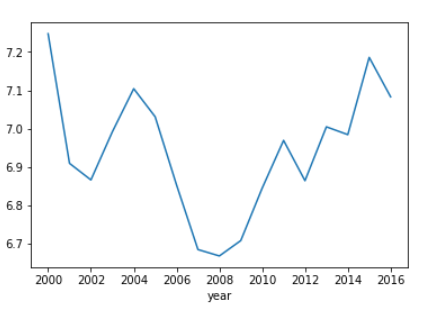

Introducing SONGWORM!
There are times that when you get absolutely bored, you sometimes have that urge to find a way to kill some time. In that moment, you just had an idea. Maybe make a game where everyone can compete with something most people enjoy...songs!
Thats why, here at COMET Inc., we decided to make a mobile application, where the game is to guess the song, simple right? There's nothing more enjoyable than competing with your friends and family and see which one is the most knowledgable with songs.
In this post, we'll be introducing the mere basic concept of game itself. Exploring new ways for our users to enjoy our product.
The Concept Phase
In making the app, we first wanted to know what songs would be best in making our app relevant to the current generation while still appeasing to the older generations. So, in order to find out, we first took a look at a statistical report from Kaggle, this report has ratings of songs in several genres ranging from experimental to global. So, for our first feature for the app was adding songs of particular genres that were popular.
In order to determine which genres would fit best into the app, we first took a look at the list of songs reviewed over the years and see which genres overall have the best rating while maintaining its consistency.
The Concept Phase: Part 2
Here's an overview of the data on each genres we were able to find.
Electronic:
It shows a massive downward spike spanning 3-4 years, representing its current potential to be unstable.
Pop/R&B:

It shows a downward spike at first, then rises to a consistent high score for the rest of the years.
Metal:
It shows a slow rise, while maintaining consistency, it shows stability in its ratings.
Rock:
Presense of several high scores, but also several downward spikes, showing instability.
Rap:
Only high ratings can be seen at the beginning of the decade, only to be followed by a downward slope.
Experimental:
Similar to Rock, showing multiple high and low scores in 1-2 year intervals.
Folk/Country:
Only average scores are seen while also being unstable.
Jazz:
Shows average and high ratings, but the cost of several inconsistencies in the beginning of the decade.
Global:
Shows a large spike spanning 4 years at best, while the rest remains average.
Version Testing
For the first version of the app, we'll be adding songs from genres according to the overall popularity. As shown by the results in the previous section, the most popular genre Metal, followed by Pop/R&B, Electronic, Rock, and Jazz. Among these only Metal and Pop/R&B remain consistent for about a decade, having only small fluctuations every 2 years or so. As for the rest, the results show frequent downward and upward spikes showing a inconsistency spanning 2-3 years, while some of those genres produce highly rated songs, its instability in keeping the genre relevant poses certain risks in its implementation in the app.
Overall, the results point out that while both Metal and Pop show consistent ratings, it would be mire preferable if other highly rated genres are added into the mix to maintain variety while keeping the app relevant without any risk of simply adding random songs at will.
More updates to come.....Stay Tuned!